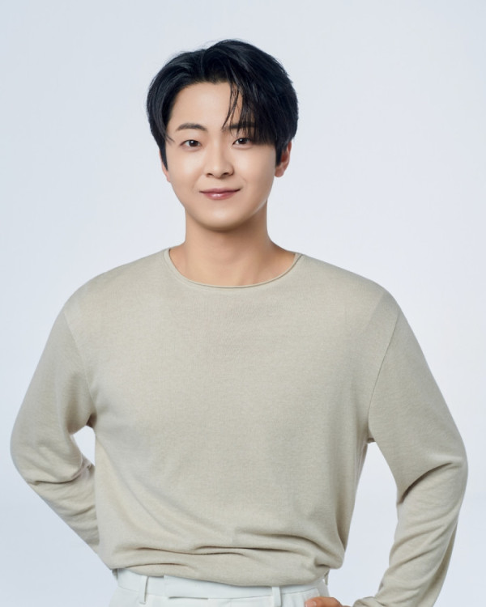
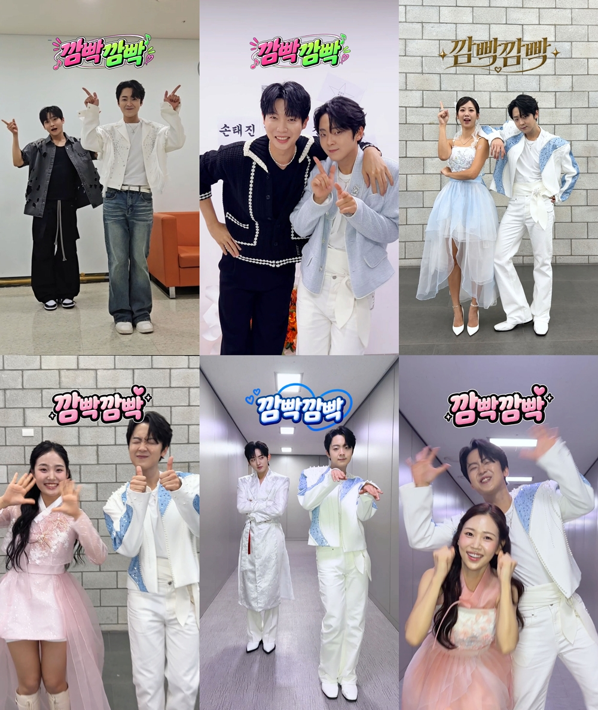
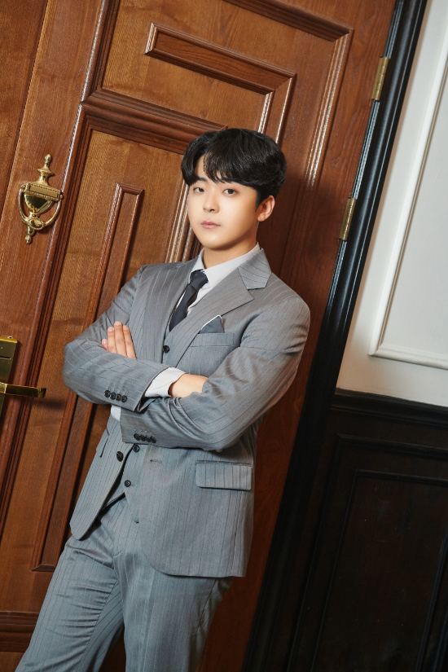
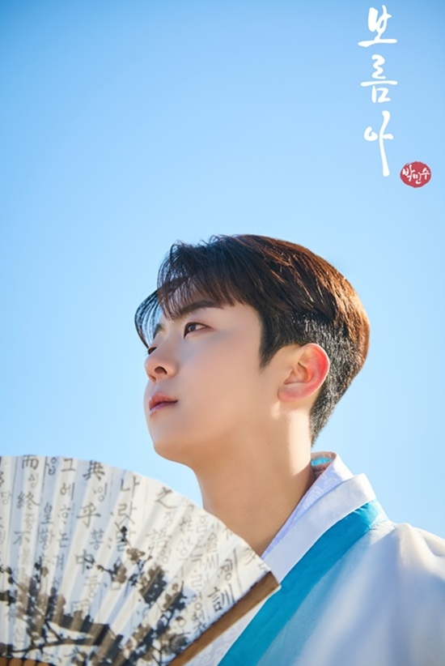

박민수 근황 소식 들으셨나요? 공식 SNS 개설과 함께 새 프로필 사진, 인사 영상이 공개됐어요. 셔츠와 니트로 보여준 부드러운 분위기도 반갑지만, 일상과 작은 행복을 나누고 싶다는 마음이 더 눈길을 끄네요. 사진의 매력부터 음악 활동과 이어지는 소통의 의미까지 살펴봤어요.
박민수 근황, 공식 SNS로 건넨 반가운 인사
가수 박민수가 공식 SNS 채널을 열고 새 프로필 사진과 스틸컷을 선보였어요. 사진 공개에 더해 짧은 인사 영상으로 팬들에게 마음을 전했다는 점이 반갑네요. 프로필로 달라진 분위기를 보여주고, 영상에서는 어떤 이야기를 나누고 싶은지 직접 설명했어요. 사진과 인사가 함께 있어 단순히 외모의 변화만 살펴보는 소식보다 한결 따뜻하게 다가와요.
소통의 중심에 놓인 말은 일상과 소소한 행복이에요. 멋진 무대뿐 아니라 편안한 모습도 함께 나누겠다는 뜻으로 읽혀요. 가수를 응원하다 보면 노래를 부르는 모습만큼 평범한 순간의 표정도 궁금해지잖아요. 그런 마음에서 보면 공식 채널을 통한 인사는 반가운 접점이에요. 거창한 문구를 덧붙이지 않아도, 자신의 일상을 함께 나누고 싶다는 내용만으로 팬들을 향한 친근함이 전해지네요.

셔츠와 니트가 살린 부드러운 프로필
공개된 프로필에서는 셔츠와 니트를 활용한 스타일링이 눈길을 끌어요. 단정한 옷차림에 부드러운 눈빛, 여유로운 포즈가 어우러져 차분한 분위기를 보여줘요. 화려한 무대 의상과는 또 다른 매력을 살펴볼 수 있는 구성이에요. 의상 자체를 강하게 강조하기보다 얼굴과 표정에 시선이 머무는 느낌이라, 사진 속 인상을 편안하게 받아들이게 되네요.
프로필 사진의 재미는 같은 인물에게서 여러 분위기를 발견하는 데 있어요. 셔츠가 주는 깔끔함과 니트가 주는 포근함을 함께 보니, 단정함과 친근함이 자연스럽게 연결돼요. 저는 멋지게 꾸민 모습 속에서도 눈빛과 자세가 편안하게 느껴지는 점이 좋아요. 사진만 보고 성격을 단정할 수는 없지만, 새 프로필이 전하는 부드러운 인상은 인사 영상의 소통 메시지와도 잘 어울려요. 사진의 분위기와 말의 온도가 비슷해서 더 반갑게 느껴지네요.
오디션 무대와 노래로 이어지는 이야기
박민수는 MBN ‘불타는 트롯맨’과 ‘무명전설’에 출연했어요. SBS 러브FM ‘인생은 오디션’에서는 최종 2위에 올랐고요. 방송과 라디오라는 서로 다른 무대에서 노래를 들려준 가수라는 점도 함께 살펴볼 만해요. 프로그램 이름을 나란히 놓아보면 프로필 사진 속 한 장면에만 머물지 않고, 노래를 중심으로 이어지는 활동을 떠올리게 돼요.
박민수 근황을 살펴보며 함께 짚고 싶은 곡은 ‘깜빡깜빡’이에요. 이 곡은 ‘인생은 오디션’ 신곡 미션에서 선보였고, 음원으로도 발표된 곡이에요. 일상에서 무언가를 깜빡하는 상황을 가사에 담은 점이 특징이에요. 휴대전화를 손에 들고도 찾는 것처럼 누구나 떠올릴 법한 소재를 노래로 풀어냈어요. 일상을 나누고 싶다는 SNS 인사와 함께 생각하니, 생활 속 작은 이야기가 음악과 소통을 잇는 공통점으로 보이네요.

박민수 근황 속 팬 소통이 반가운 이유
무대에서는 한 곡 안에 감정과 표현을 담아야 하지만, SNS에서는 사진이나 짧은 인사로도 다른 매력을 보여줄 수 있어요. 그래서 공식 채널 개설은 가수의 음악을 좋아하는 사람에게 관심의 폭을 넓혀주는 계기가 될 수 있겠어요. 공연의 완성된 장면을 보는 즐거움과 한 사람의 생각을 알아가는 즐거움은 각각의 매력이 있으니까요. 해당 인사에서 작은 행복을 함께 나누고 싶다는 내용이 특히 눈에 들어오는 이유예요.
저는 소통을 꼭 특별한 사건이나 큰 발표로만 채울 필요는 없다고 생각해요. 가수가 직접 골라 전하는 평범한 한 장의 사진에도 그 사람의 관심과 취향이 담길 수 있잖아요. 그런 이야기가 음악을 듣는 즐거움에 자연스럽게 더해지면 좋겠네요. 모든 모습을 보여줘야 한다는 기대보다는, 편안하게 나누고 싶은 이야기를 받아보는 관계가 더 따뜻하게 느껴져요. 짧은 인사에 담긴 친근함이 무리 없이 이어지기를 응원하게 돼요.

사진 너머로 기대하게 되는 음악과 일상
공식 SNS와 새 프로필, 인사 영상을 함께 보면 박민수가 팬들과 접점을 넓히려는 방향이 보여요. ‘울아버지’와 ‘보름아’처럼 자기 이름을 내건 곡을 발표하고, 오디션 무대에서도 여러 노래를 들려준 가수라 음악 이야기에도 관심이 가요. 제게는 멋진 프로필 한 장과 다정한 인사가 각각의 역할로 충분히 반가워요. 사진으로는 분위기를 살펴보고, 인사에서는 일상을 나누려는 마음을 읽고, 음악에서는 가수의 표현을 만나는 식으로 즐길 거리가 생긴 셈이에요.
어떤 일상 이야기를 만나게 될지는 열린 기대감으로 남겨두고 싶어요. 소소한 행복이라는 말처럼 부담 없이 미소 지을 수 있는 장면도 좋고, 노래와 연결되는 이야기도 반가울 것 같아요. 음악 활동을 중심에 두면서 무대 밖 모습까지 편안하게 알아갈 수 있다면 응원하는 즐거움도 더 풍성해지겠네요. 단정한 셔츠와 포근한 니트의 인상처럼, 가수와 팬 사이에도 편안하고 따뜻한 이야기가 쌓이기를 바라요.
